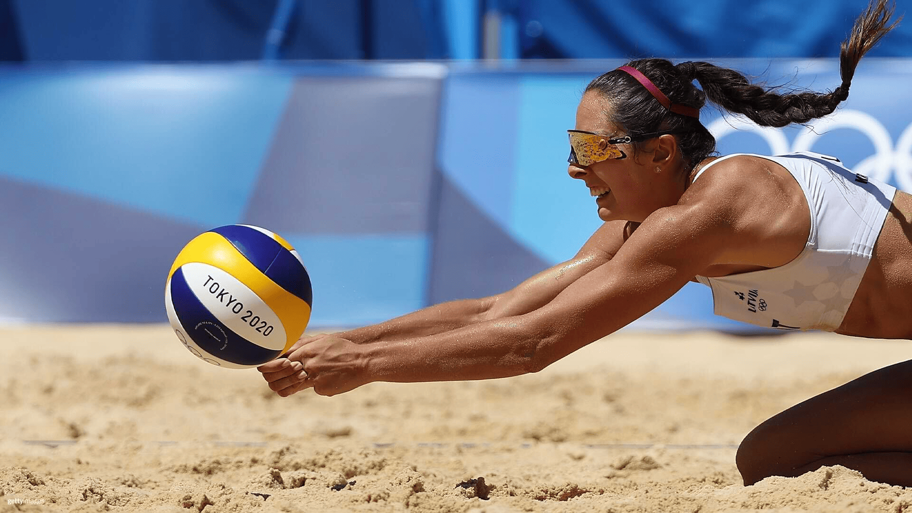
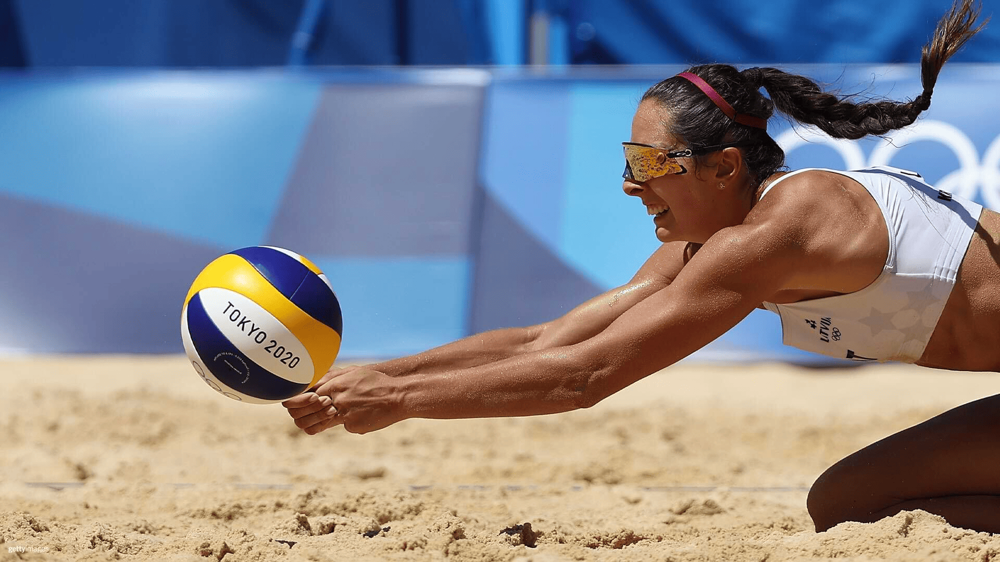

Pravila odbojke
Broj igrača
Svaka ekipa ima šest igrača na terenu koji rotiraju pozicije nakon svakog osvojenog servisa.
Osnovni cilj
Cilj igre je prebaciti loptu preko mreže tako da padne na protivničko polje i tako osvojiti poen.
Dodiri lopte
Ekipa smije maksimalno tri puta dotaknuti loptu prije nego je prebaci preko mreže.
Osvajanje seta
Set se osvaja kada ekipa dosegne 25 poena s najmanje dva poena razlike; igra se na tri dobivena seta.
LJEPOTA ODBOJKE
Odbojka je dinamičan i timski sport koji potiče suradnju, brzinu razmišljanja i fizičku spremnost. Igra se temelji na povjerenju među suigračima i razvija osjećaj zajedništva. Bilo da se igra rekreativno na plaži ili profesionalno u dvorani, odbojka pruža zabavu, izazov i mnoge zdravstvene prednosti. Idealna je za sve generacije i razine iskustva.
KORISNE POVEZNICE O ODBOJCI
Za one koji žele znati više, istražiti pravila, gledati utakmice ili se uključiti u lokalne i međunarodne aktivnosti, donosimo nekoliko korisnih vanjskih izvora vezanih uz svijet odbojke.
-
🏐 Službena stranica FIVB (Međunarodne odbojkaške federacije)
🇭🇷 Hrvatski odbojkaški savez (HOS)
🏅 Odbojka na Olimpijskim igrama – Olympic.org
📊 Volleybox – statistike, igrači i transferi
🌍 Volleyball World – vijesti, natjecanja i livestreamovi
🎥 VolleyballWorld YouTube kanal – utakmice i highlights
📘 Službeni pravilnici FIVB (PDF)
Galerija sportskih slika
 


Pravila odbojke – audio snimka
Za bolje razumijevanje osnovnih pravila odbojke, poslušajte ovu kratku audio snimku koja objašnjava pravila igre, pozicije igrača i način osvajanja poena.